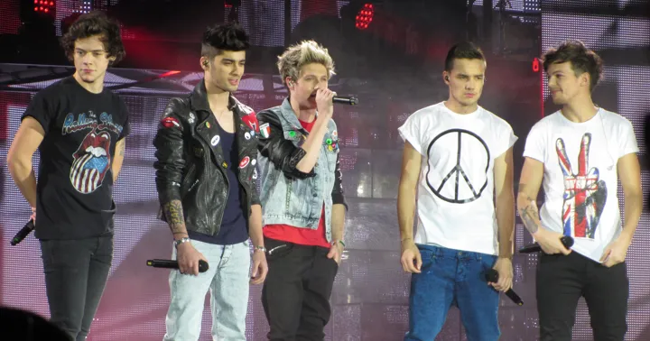

MUSIC
Básicamente obligatoria.
UN PEQUEÑO DETALLE, A MI MANERA
Hoy tocaban
flores amarillas.
Pero mandar solo una flor
se quedaba un poco corto.
EL PLAN ERA SIMPLE
Así que mejor junté algunas cosas que van un poco más contigo.
Bienvenida a tu Yellow Day.
SUBE UN POCO EL VOLUMEN
September 21, 2026
Un track a la vez. Lo mejor viene después.
Porque hacer algo inspirado en ti sin meter música no tenía demasiado sentido.
Luces, canciones, entradas, gritos y ese momento en el que empieza la canción que estabas esperando.
LIGHTS ON. WORLD OFF.Porque al final hoy la excusa eran las flores amarillas.
Creo que falta algo.
Ok, no ponerlos a ellos sería too much.

ONE DIRECTION
Hay gustos que simplemente se quedan con los años.
Parece que One Direction es uno de esos.
Sí, ellos también tenían que aparecer.
Casi nos olvidamos del tema principal…
PEQUEÑAS COSAS, MUY TÚ
Básicamente obligatoria.
Una de esas cosas que claramente disfrutas de verdad.
Evidentemente tenían que aparecer.
Esto tampoco necesitaba demasiada explicación.
Un pequeño jardín, de a una flor.
LAS QUE CUENTAN
Estas sí cuentan como las oficiales.
21 DE SEPTIEMBRE DE 2026
La verdad, no sabía si alguien más te iba a dar flores hoy, pero seguro este día te importa mucho, asi que igual pensé que podía ser un lindo detalle.
Y ya que iba a hacer algo, no quería que fueran simplemente unas flores y ya. Así que terminé mezclando flowers, música, conciertos y, obviamente, un poquito de One Direction.
Espero que te haya gustado. :)
— Samuel